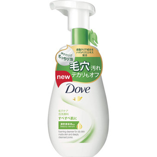

返回列表
产品名称：ダヴ ディープピュア クリーミー泡洗顔料

ユニリーバ・ジャパン ダヴ ディープピュア クリーミー泡洗顔料 １６０ｍｌ
メーカー ユニリーバ・ジャパン
JANコード 4902111736877
商品の特徴
プレミアムスキンケア発想
Tゾーンのテカリもオフ
美容液配合
テカリをおさえるクリーミー泡洗顔料
洗いながらうるおいを与えすべすべの素肌に
成分・分量
水
ココイルグリシンK
PG
グリセリン
ラウロアンホ酢酸Na
ジステアリン酸PEG-150
クエン酸
パルミチン酸
香料
ステアリン酸
水酸化K
PPG-6デシルテトラデセス-30
EDTA-2Na
BHT
ラウリン酸ポリグリセリル-10
メチルイソチアゾリノン
用法及び用量
-